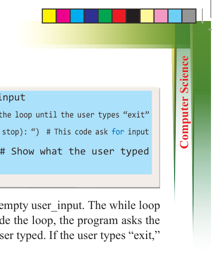
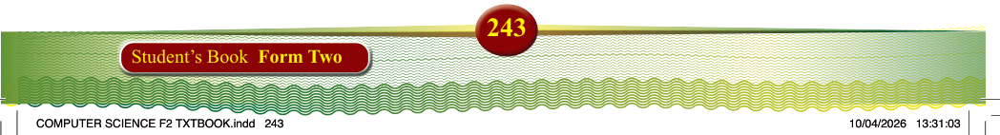
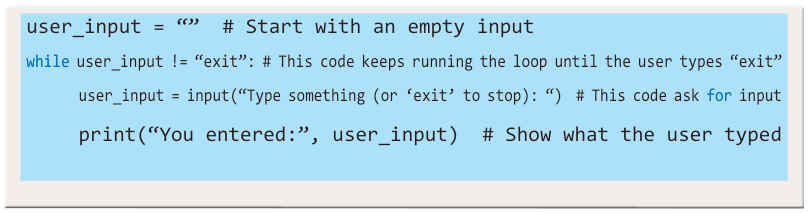

user_input = “” # Start with an empty input
while user_input != “exit”: # This code keeps running the loop until the user types “exit”
user_input = input(“Type something (or ‘exit’ to stop): “) # This code ask for input
print(“You entered:”, user_input) # Show what the user typed
Referring to this code, the program starts with an empty user_input. The while loop runs as long as the user does not type “exit”. Inside the loop, the program asks the user to enter something and then prints what the user typed. If the user types “exit,” the loop stops, and the program ends.
Using break and continue statements
Loops can be managed using the break and continue statements.Break instantly exits the loop when a specific condition is met, while continue skips the current iteration and proceeds to the next one.
for num in range(1, 10): if num == 5: break # Stops the loop when num is 5 print(num)
Program example 5.8:
Using break to stop a loop
Output:
1
2
3
4
Figure 5.15: Output of program the example 5.8
for num in range(1, 6): if num == 3: continue # Skips printing 3 print(num)
Program example 5.9:
Using continue to skip a number